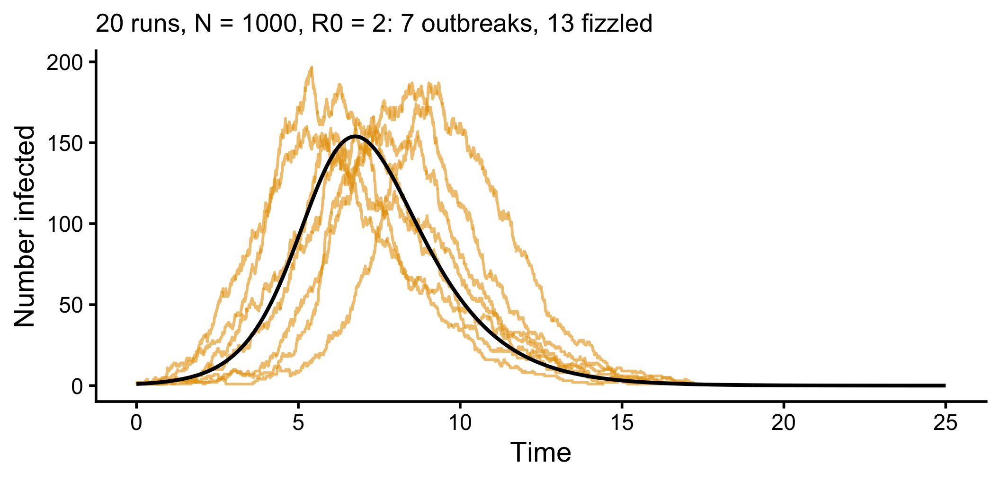
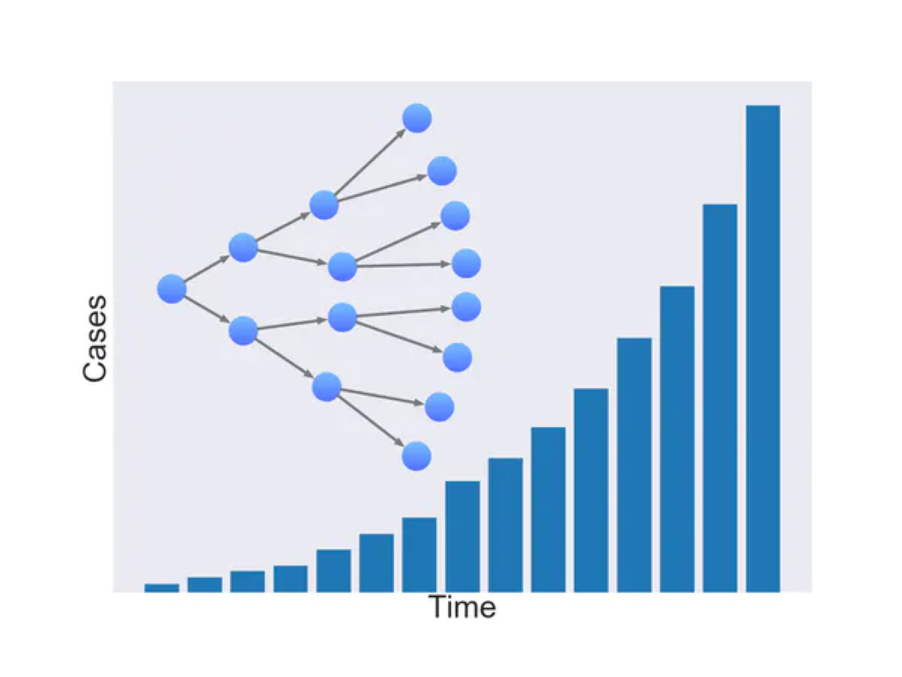
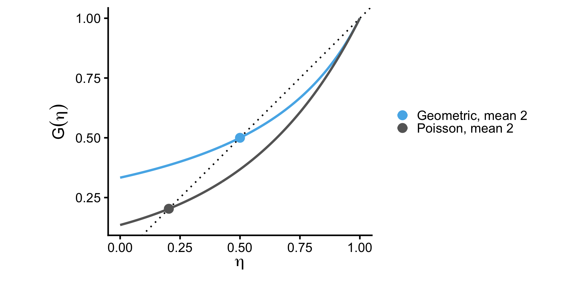
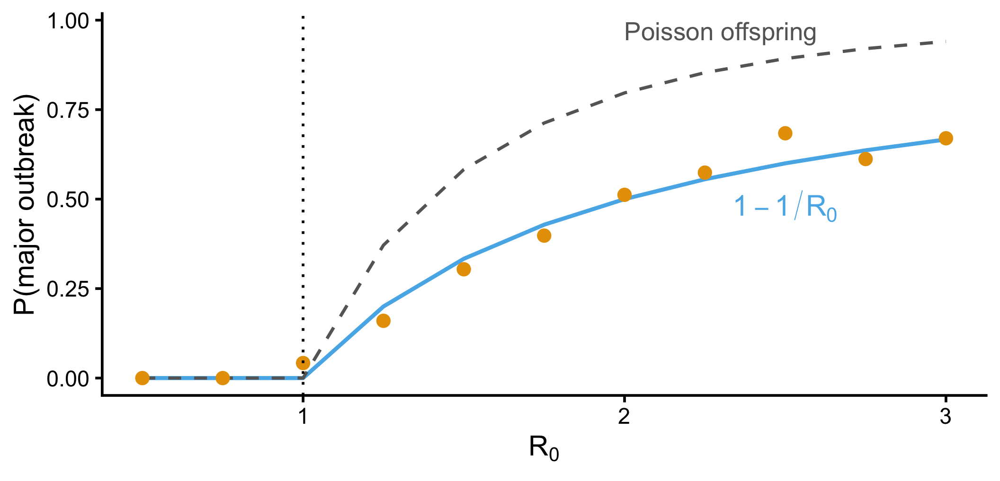
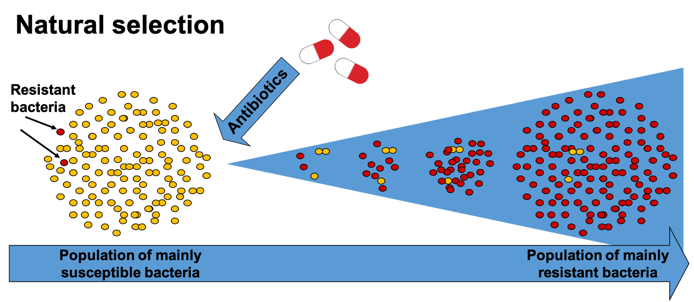
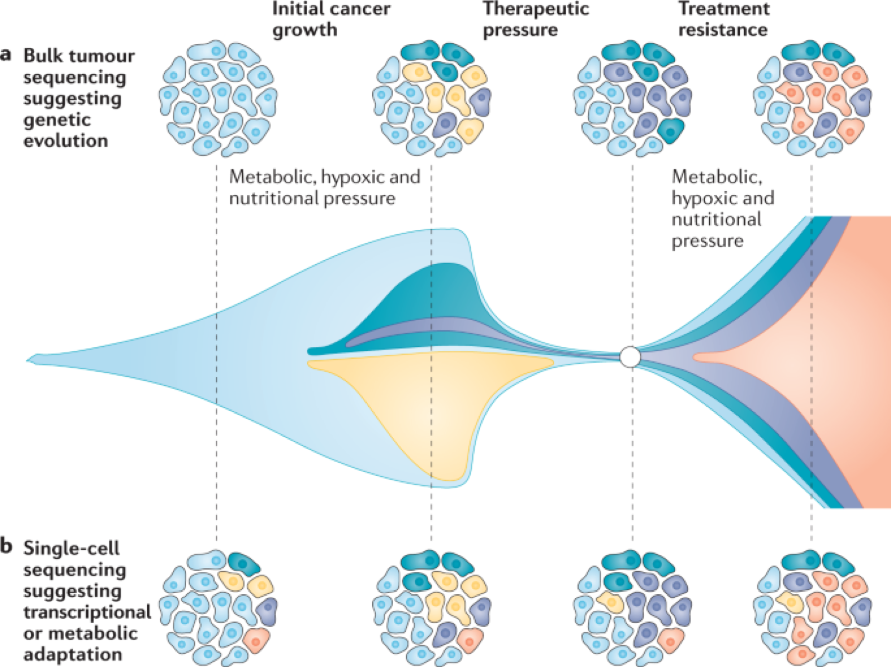
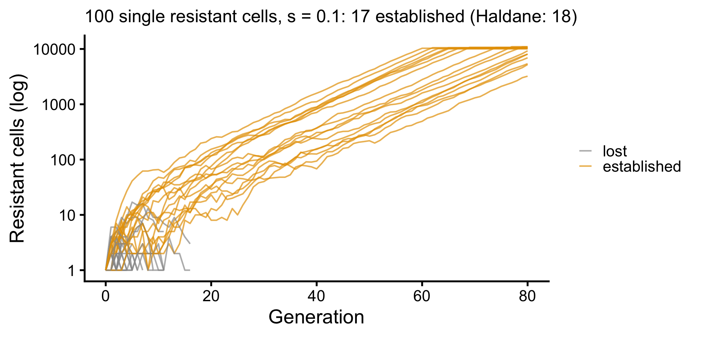
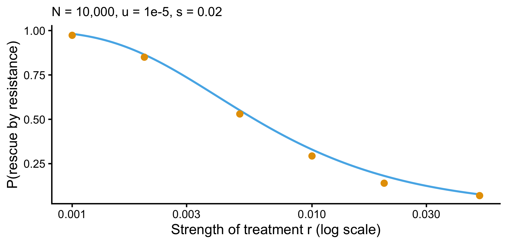
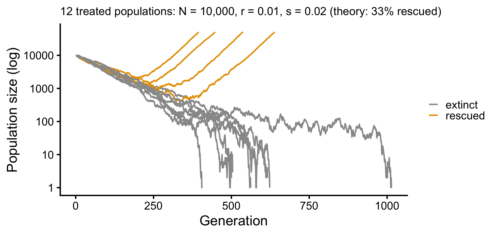
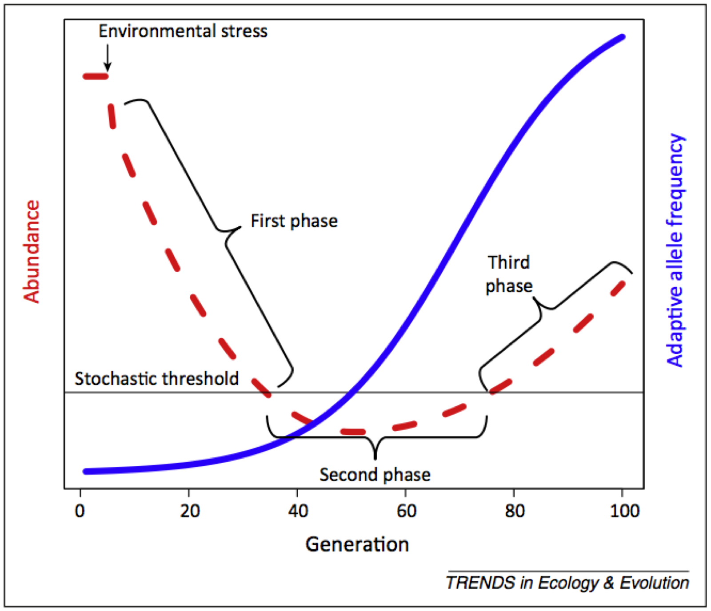

Computational Epidemiology · Lecture 2 · epidemic takeoff and evolution of resistance
\(R_0 > 1 \;\Rightarrow\;\) an epidemic. Always.
But:
When numbers are small, chance decides. The ODE describes the average, but the average is not what happens to one rare lineage.
Epidemic takeoff
One infected person arrives in a fully susceptible population with \(R_0 = 2\).
Will there be an epidemic?
Evolution of resistance
A bacterial infection is treated, and the population declines. A resistant mutant appears.
Will it save the population?
Both ask: does a rare lineage that grows on average escape extinction?

Same events and same rates as the ODE, but one event at a time, in a population of \(N\) individuals:
| Event | Rate | Change |
|---|---|---|
| infection | \(a_1 = \beta S I / N\) | \(S - 1,\; I + 1\) |
| recovery | \(a_2 = \gamma I\) | \(I - 1,\; R + 1\) |
Repeat:
Each event type “waits” an exponential time with its own rate: \(P(\text{event } i \text{ not yet}) = e^{-a_i t}\).
When does the first event happen? Nothing has happened by time \(t\) if no event has happened:
\[ P(\text{nothing by } t) = e^{-a_1 t}\, e^{-a_2 t} = e^{-a_0 t} \quad\Rightarrow\quad \tau \sim \text{Exponential}(a_0) \]
Which event wins the race?
\[ P(\text{event 1 first}) = \int_0^\infty a_1 e^{-a_1 t}\, e^{-a_2 t}\, dt = \frac{a_1}{a_1 + a_2} \]
The method is exact: no time step, no approximation. It is the same stochastic process whose average the ODE describes when \(N\) is large.

Each case “gives birth” to new cases. The epidemic is a growing family tree.
Illustration: The Conversation, “How to flatten the curve of coronavirus: a mathematician explains” (2020).
Early on almost everyone is susceptible, so infected individuals do not interact.
The same mathematics describes
Let \(\eta\) be the probability that the lineage of one individual eventually dies out.
The lineage dies out if and only if all of its \(k\) offspring lineages die out. Each does so independently, with probability \(\eta\):
\[ \eta = \sum_{k=0}^{\infty} p_k\, \eta^k \;=\; G(\eta) \]
\(G\) is the probability generating function of the offspring distribution.
Offspring number \(k \sim \text{Poisson}(m)\), so \(p_k = e^{-m} m^k / k!\).
\[ G(\eta) = \sum_{k=0}^\infty e^{-m}\frac{m^k}{k!}\,\eta^k = e^{-m} \sum_{k=0}^\infty \frac{(m\eta)^k}{k!} \]
The sum is the exponential series, \(\sum_k x^k/k! = e^x\):
\[ G(\eta) = e^{-m}\, e^{m\eta} = e^{m(\eta - 1)} \]
So the extinction probability solves
\[ \eta = e^{m(\eta - 1)} \]
This has no closed-form solution. Solve it graphically or numerically.

Extinction probability: where \(G\) crosses the diagonal. Poisson gives \(\eta \approx 0.2\); geometric gives \(\eta = 1/2\).
An infected person infects at rate \(\beta\) and recovers at rate \(\gamma\).
At every event, it is
So the number of infections before recovery is geometric: \(p_k = (1 - q)\,q^k\), with mean \(\beta/\gamma = R_0\).
\[ G(\eta) = \frac{1}{1 + R_0(1-\eta)} \;\Rightarrow\; \eta = \frac{1}{R_0} \qquad \boxed{P(\text{takeoff}) = 1 - \frac{1}{R_0}} \]
Geometric offspring: \(p_k = (1-q)\,q^k\) with \(q = \beta/(\beta + \gamma)\).
\[ G(\eta) = (1 - q) \sum_{k=0}^\infty (q\eta)^k = \frac{1 - q}{1 - q\eta} \qquad \text{(geometric series)} \]
Set \(\eta = G(\eta)\) and multiply out:
\[ \eta\,(1 - q\eta) = 1 - q \quad\Rightarrow\quad q\eta^2 - \eta + (1 - q) = 0 \]
The two roots are \(\eta = 1\) and
\[ \eta = \frac{1 - q}{q} = \frac{\gamma}{\beta} = \frac{1}{R_0} \qquad\Rightarrow\qquad P(\text{takeoff}) = 1 - \frac{1}{R_0} \]
With \(I_0\) initial cases, each lineage must die out independently: \(P(\text{takeoff}) = 1 - R_0^{-I_0}\).

Same mean, more variance, so fewer outbreaks take off.
Most people infect few others, and a few infect many: the offspring distribution is overdispersed.
Lloyd-Smith et al. (2005) fitted negative binomial distributions with dispersion \(k\), where variance \(= R_0(1 + R_0/k)\). For SARS, \(k \approx 0.16\).
Consequences at the same \(R_0\):

Bacteria: antibiotics kill sensitive cells. Rare resistant cells, already present or newly arising, take over.

Cancer: therapy shrinks the tumour, and resistant clones regrow it. The same process at the scale of cells.
Minimal model (discrete generations, Poisson offspring):
| per generation | ||
|---|---|---|
| sensitive cells | mean offspring \(1 - r\) | decline: \(N_t = N(1-r)^t\) |
| resistant cells | mean offspring \(1 + s\) | growth |
| mutation | sensitive → resistant | probability \(u\) per new cell |

Drift phase (lost or not) → deterministic phase (growth like \(e^{st}\)).
Poisson offspring with mean \(1 + s\) gives \(G(\eta) = e^{(1+s)(\eta - 1)}\). Write \(P = 1 - \eta\):
\[ 1 - P = e^{-(1+s)P} \]
For small \(s\), \(P\) is small too. Expand \(e^{-x} \approx 1 - x + x^2/2\):
\[ 1 - P \approx 1 - (1+s)P + \tfrac{1}{2}(1+s)^2 P^2 \;\Rightarrow\; P \approx \frac{2s}{(1+s)^2} \approx \boxed{2s} \]
A resistant mutant with a 5% advantage is lost about 90% of the time.
Sensitive cells produced during the decline: \(\displaystyle\sum_t N(1-r)^t \approx \frac{N}{r}\)
Resistant mutants arising: \(\dfrac{Nu}{r}\)
Each establishes with probability \(2s\).
The number of successful mutants is roughly Poisson with mean \(2Nus/r\).
. . .
\[ P(\text{rescue}) \approx 1 - \exp\!\left(-\frac{2Nus}{r}\right) \]
Orr & Unckless (2014)
The whole answer is one number: \(\theta = 2Nus/r\).

Step 1: how many sensitive cells are ever produced? A geometric series:
\[ \sum_{t=1}^{\infty} N (1 - r)^t = N\,\frac{1 - r}{r} \approx \frac{N}{r} \]
Halving the killing rate doubles the number of cells, and so doubles the number of mutation opportunities.
Step 2: why \(1 - e^{-\theta}\)? There are many mutants, each rare and each independently successful with probability \(2s\). The number of successes is then approximately Poisson with mean
\[ \theta = \underbrace{\frac{Nu}{r}}_{\text{mutants}} \times \underbrace{2s}_{\text{each establishes}} \]
and rescue fails only if there are zero successes:
\[ P(\text{rescue}) = 1 - P(\text{0 successes}) = 1 - e^{-\theta} \]

The rescued populations make a U-shape: decline, a bottleneck, then recovery as the resistant lineage takes over.

Carlson, Cunningham & Westley (2014):
Our branching-process calculation covers phases 1–2: does a rescue mutant arise and escape loss before the population is gone?
\[ \theta = \frac{2\,N\,u\,s}{r} \]
| Larger \(\theta\), more resistance | Clinical reading |
|---|---|
| large \(N\) | treat early, while the pathogen load is small |
| high \(u\) | mutagenic drugs and stress responses are bad news |
| large \(s\) | resistance that is cheap and effective |
| small \(r\) | slow killing: low doses, missed doses |
Caveat: this assumes resistant and sensitive cells do not compete. If they do, killing sensitive cells helps the mutant (Day 2).
Before treatment, resistance usually carries a cost \(c\), and mutants sit at mutation–selection balance with frequency \(\approx u/c\).
Back-of-envelope:
So standing variation matters more than new mutations when \(c < r\): cheap resistance, fast killing.
See Orr & Unckless (2014) for the full treatment.
Write the establishment probability as \(P = 1 - \eta\) and expand \(G\) around 1 (Taylor):
\[ G(1 - P) \approx 1 - G'(1)\,P + \tfrac{1}{2} G''(1)\,P^2 \]
Two facts about generating functions:
\[ G'(1) = E[k] = m, \qquad G''(1) = E[k(k-1)] = \sigma^2 + m^2 - m \]
Insert into \(1 - P = G(1 - P)\):
\[ 1 - P = 1 - mP + \tfrac{1}{2}(\sigma^2 + m^2 - m)P^2 \quad\Rightarrow\quad P = \frac{2(m - 1)}{\sigma^2 + m(m - 1)} \;\approx\; \frac{2(m-1)}{\sigma^2} \]
The last step uses \(m \approx 1\). For Poisson (\(\sigma^2 = m\)) the middle expression gives \(2s/(1+s)^2\), as before.
For a rare lineage whose mean offspring number is just above 1:
\[ \boxed{P(\text{establish}) \;\approx\; \frac{2\,(\text{mean} - 1)}{\text{variance}}} \]
| Lineage | mean | variance | \(P(\text{establish})\) |
|---|---|---|---|
| resistant mutant, Poisson | \(1+s\) | \(\approx 1\) | \(2s\) |
| SIR infection, geometric | \(R_0\) | \(R_0(1+R_0) \approx 2\) | \(R_0 - 1 \approx 1 - 1/R_0\) |
| superspreading, neg. binomial | \(R_0\) | \(\approx 1 + 1/k\) | \(2(R_0 - 1)/(1 + 1/k)\) |
Excess growth helps; variance hurts.
Tutorial: T2. All code for these figures is in it.
Family B, branching processes and resistance, for example:
Plus families A (compartment), C (strain evolution), D (within-host), E (space), F (data). See the project page.
Form teams of 3–5. Pitch 1 is at 13:00: one question, one model family, one figure.